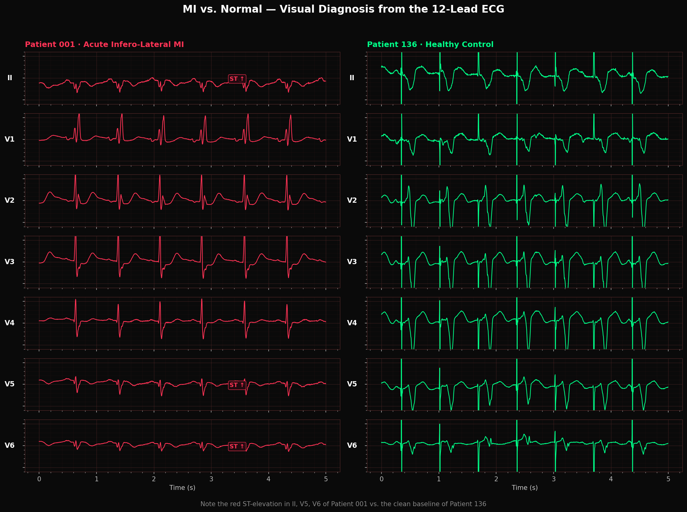
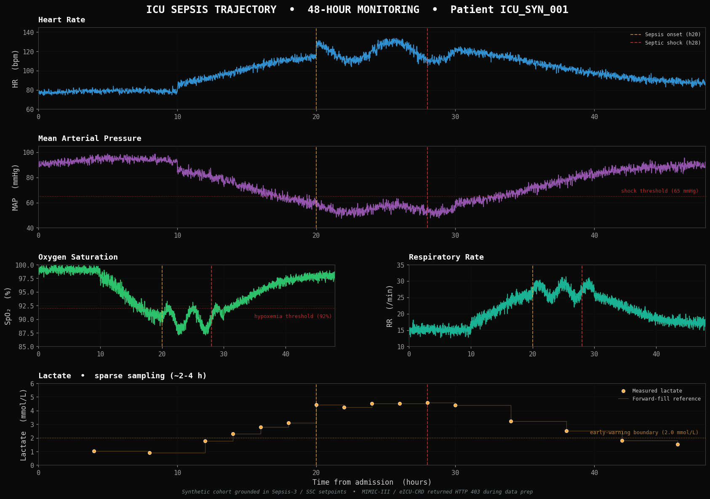

A real clinical time-series case — built on the PhysioNet PTB Diagnostic Database and the CinC Challenge 2019 reference structure — for AION to investigate end-to-end.
A 5-second, 12-channel voltage trace of the heart's electrical activity. A trained cardiologist reads ST-elevation in seconds — but the pattern is 12 simultaneous signals at 250 Hz, and missing it changes everything.
48 hours of continuous vital signs (HR, BP, SpO₂, RR, temperature) plus sparse lactate draws. Sepsis onset hides in slow drifts that no bedside monitor aggregates.
Both problems are fundamentally about time — ST changes unfold over minutes, septic shock develops over hours. Static classifiers fail; sequential models are required.
A missed MI or a 4-hour-delayed antibiotic in septic shock costs a life; a false alarm costs a few minutes of attention. Evaluation must reflect that asymmetry.
example/aion-medical-demo/medical/ ├── case.md # workspace context, deliverables, run instructions ├── task.md # the clinical task the agent must solve ├── FEATURE_TRIGGER_MAP.md # which task lines fire which AION feature ├── PLAYWRIGHT_AND_GUI.md # visual handling & cross-platform notes ├── slide.html # this deck ├── data/ │ ├── raw_external/ # what the agent ingests as-is │ │ ├── ecg_signals.csv # 2.3 MB · 12 leads × 5s × 250 Hz × 3 patients │ │ ├── icu_vitals.csv # 352 KB · 2,880 min × 9 channels × 1 patient │ │ └── ptb_ecg/ # raw WFDB binary (PhysioNet PTB Diagnostic DB) │ │ ├── patient001/ # acute infero-lateral MI │ │ ├── patient019/ # acute infero-lateral MI │ │ └── patient136/ # healthy control │ └── raw_legacy/ # deliberately inconsistent formats (data-interface skill) │ ├── old_ecg_format.edf # legacy EDF, different gain / lead order │ └── manual_corrections.json # 8 cardiologist beat annotations └── docs/reference/ # clinician-provided visual evidence (the next slides) ├── patient001_ecg_12lead.png # MI: 12 leads with ST↑ annotations ├── patient136_ecg_normal.png # control: 12 leads, clean baseline ├── mi_vs_normal_comparison.png # side-by-side: where the diagnosis is ├── icu_vitals_full_48h.png # sepsis trajectory across HR/MAP/SpO₂/RR/lactate ├── icu_vitals_zoom_sepsis.png # hours 4–32 zoomed onto the transition ├── forecast_vs_actual.png # model output vs ground truth (post-run) ├── shap_feature_importance.png # interpretability (post-run) └── evaluation_criteria.pdf # 4-page clinical rubric for grading

Each patient is a 5-second, 12-lead, 250 Hz recording — 15,000 numbers per strip. The diagnosis is essentially visual: ST-elevation in the inferior / lateral leads, abnormal Q waves, T-wave inversion. The agent must learn these morphological signatures from a handful of labeled patients.
ST↑ markers on the left)A single ICU patient generates 2,880 minutes × 9 channels of continuous monitoring — heart rate, blood pressure (SBP/DBP/MAP), SpO₂, respiratory rate, temperature — plus sparse, asynchronous lactate draws (~16 measurements over 48 h). The agent must fuse dense and sparse streams and fire an early warning before the patient crashes.

The case is scored on four artefacts — predictions, model, interpretability, and a report the agent must defend in front of a reviewer.
ECG: per-patient MI probability (3 patients). ICU: hourly sepsis probability over 48 h (2,880 timestamps). One submission CSV per task.
Trained classifiers + evaluation module: F1, AUROC, sensitivity @ specificity, calibration, plus failure-mode analysis. Scored against evaluation_criteria.pdf.
SHAP feature importance and a forecast_vs_actual.png plot showing the model's signal vs. ground truth — required for clinical defensibility.
docs/report.md embedding every figure, every metric, every governance verdict. The report is the agent's final deliverable and must be self-contained.
A cardiologist cannot watch 48 hours of ICU vitals. An intensivist cannot read 12-lead ECG at 250 samples per second. The data sits across four incompatible formats, three public datasets, and a sparse-lab clinical reality — and the cost of missing a single early warning is a life.